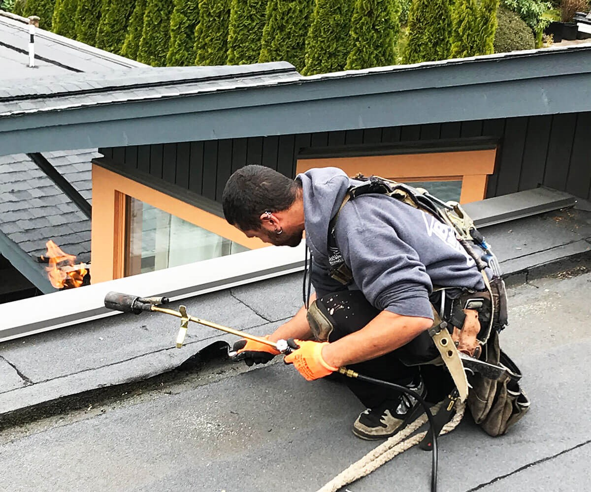

News
Services
roofing Johnson City, Tennessee
roofing Johnson City, Tennessee
roofing Johnson City, Tennessee
roofing Johnson City, Tennessee
roofing Johnson City, Tennessee
About Us
News

Benefits of Installing a New Roof
Installing a new roof can be an incredibly rewarding experience!. Not only does it add value to your home, but it can also lead to significant energy savings. (Contrary to popular belief,) it doesn't have to be overly expensive either!
Posted by
on 2023-07-05
How to Cut Costs on Roofing Repairs and Maintenance
Cutting costs on roofing repairs and maintenance can be tricky.. It's (important) to compare prices between different contractors before making a purchase decision!
Posted by
on 2023-07-05
How to Find the Best Roofing Solution for Your Home
Finding the best roofing solution for your home can be a daunting task.. It's important to (consider) all the available options carefully, evaluate their pros and cons, and make an informed decision.
Posted by
on 2023-07-05
Roof Maintenance Tips
Regular roof maintence is essential for the longevity and health of your home(it's).. Neglecting to (do) it can result in costly repairs or even premature replacement!
Posted by
on 2023-07-05
What is the Key to Quality Roofing Solutions?
The key to quality roofing solutions is a combination of experience, modern materials, and craftsmanship. (Negation) No job is too small or too large for expert roofers, who are committed to providing high-quality results every time!. Through their years of practice and understanding of the various types of roofs available, they can give you the best advice and guidance when deciding on your roofing needs.
Moreover, (Transition Phrase) using the latest technologies also ensures that your roof remains in tip-top condition for many years to come.
Posted by
on 2023-07-05
What is the Secret to a Durable, Long-Lasting Roof?
The secret to a durable, long-lasting roof is planning and maintenance!. Properly preparing the roof surface and applying the correct materials can make all the difference.
Posted by
on 2023-07-05
Old Posts
New Posts